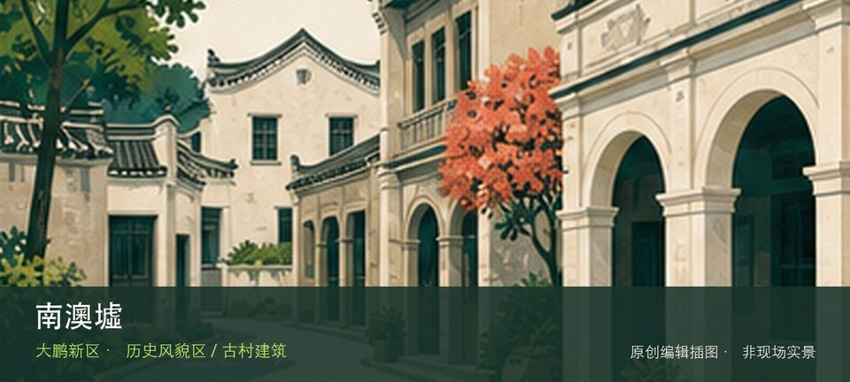

适合谁
适合建筑、地方史和社区观察者；参观时须尊重居民、宗教礼仪与生产秩序。

SHENZHEN GUIDE · 307
南澳街道墟镇片区 · 历史风貌区 / 古村建筑
南澳墟位于南澳街道墟镇片区，老墟街道、渔港商业和传统建筑共同记录南澳从海防渔村到旅游节点的演变。现场的空间线索集中在南澳墟老街和渔港商贸建筑，把两者连起来看，才不会只剩一个笼统印象。阅读这处地点要把南澳墟老街与渔港商贸建筑放回仍在使用的街巷或社区中，不把历史空间当成布景。先看公开区域，再按居民生活、礼仪和开放边界调整停留，不进入封闭建筑。
WHY GO
适合建筑、地方史和社区观察者；参观时须尊重居民、宗教礼仪与生产秩序。
先沿公开的老墟街道看商铺与传统建筑外观，再到渔港外围辨认商贸关系；作业码头、民居和未开放建筑都不进入。
公交到南澳街道中心后，从公开老街步行进入；渔港作业区与居民院落不是参观通道，按现场边界停留。
自驾使用南澳墟镇正规公共停车场后步行，旺季预留拥堵时间；不在老街、码头作业道路或居民门前临停。
10月至次年4月适合老街和渔港外围步行；夏季避开正午，台风、暴雨或强风期间不靠近码头和湿滑海堤。
NEARBY IDEAS
 编辑配图·非现场实景
编辑配图·非现场实景
南澳月亮湾位于南澳墟镇，渔港、渔船、市场与山海背景呈现仍在运转的生产海岸，观看日常比追求洁净沙滩更符合现场。
 编辑配图·非现场实景
编辑配图·非现场实景
海贝湾—畲吓湾绿道位于海贝湾沙滩至畲吓湾，约3.5公里海边慢行线通常07:00—18:00开放，以码头、观海平台和近岸岛屿视野构成短线。
 编辑配图·非现场实景
编辑配图·非现场实景
禾塘山水绿道位于金岭路后山至奔康工业区，约3公里的生态康养线路通常07:00—20:00开放，以亚公岭、管委会后山和丰树山林地构成轻徒步。